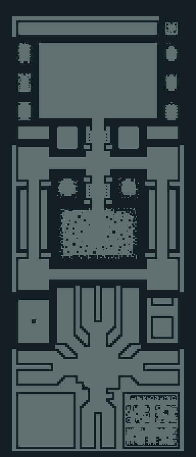

Cell-center walkability. Red indicates a difference; pale green indicates matching walkable cells. This does not validate dynamic object footprints.
Comparing runtime collision against an independently extracted WPM raster…
